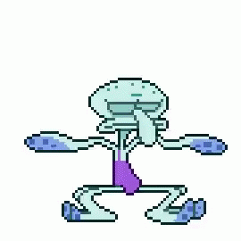

Master student at National Tsing Hua University specializing in machine learning applications for radioactive nuclide diffusion modeling and prediction. Research interests include diffusion models, adsorption materials, scientific computing, and AI-assisted analysis in nuclear science.
Currently pursuing a Master's degree at the Institute of Nuclear Engineering and Science, National Tsing Hua University. My research focuses on applying machine learning techniques to analyze and predict radioactive nuclide diffusion behavior. I am particularly interested in combining data-driven methods with physical modeling to improve understanding of radioactive transport phenomena and adsorption mechanisms.
Applying AI and machine learning algorithms for scientific modeling, prediction, and nuclear engineering applications.
Modeling and numerical analysis of radioactive material diffusion behavior and transport mechanisms.
Studying adsorption characteristics and mechanisms of radioactive elements on geological materials.
M.S. in Nuclear Engineering and Science
B.S. in Mathematics
Best Paper Award
Best Paper Award
Oral Presentation
Conference Participation
Oral Presentation
Hsieh CW, Chiou ZS, Lee CP, Tsai SC, Tseng WH, Wang YH, Chen YT, Kuo CH, Chiu HM. Enhancing europium adsorption effect of Fe on several geological materials by applying XANES, EXAFS, and wavelet transform techniques. Toxics. 2024;12(10):706.
Hsieh CW, Chiou ZS, Lee CP, Tsai SC, Tseng WH, Wang YH, Chiu HM, Sun QR, Yeh CL. Integration of Fourier and wavelet transform for adsorption mechanism of cesium study based on X-ray diffraction and absorption spectroscopy. IEEE Access. 2025;13:55487–55498.
Wang YH, Lee CP, Tsai SC, Tien NC, Chiu HM. Developing a predictive model for the diffusion of HTO using numerical approximation methods. 台灣機電工程國際學會第十屆全國學術研討會, 2025. (Oral)
Open to academic collaboration, interdisciplinary research, and scientific computing projects.